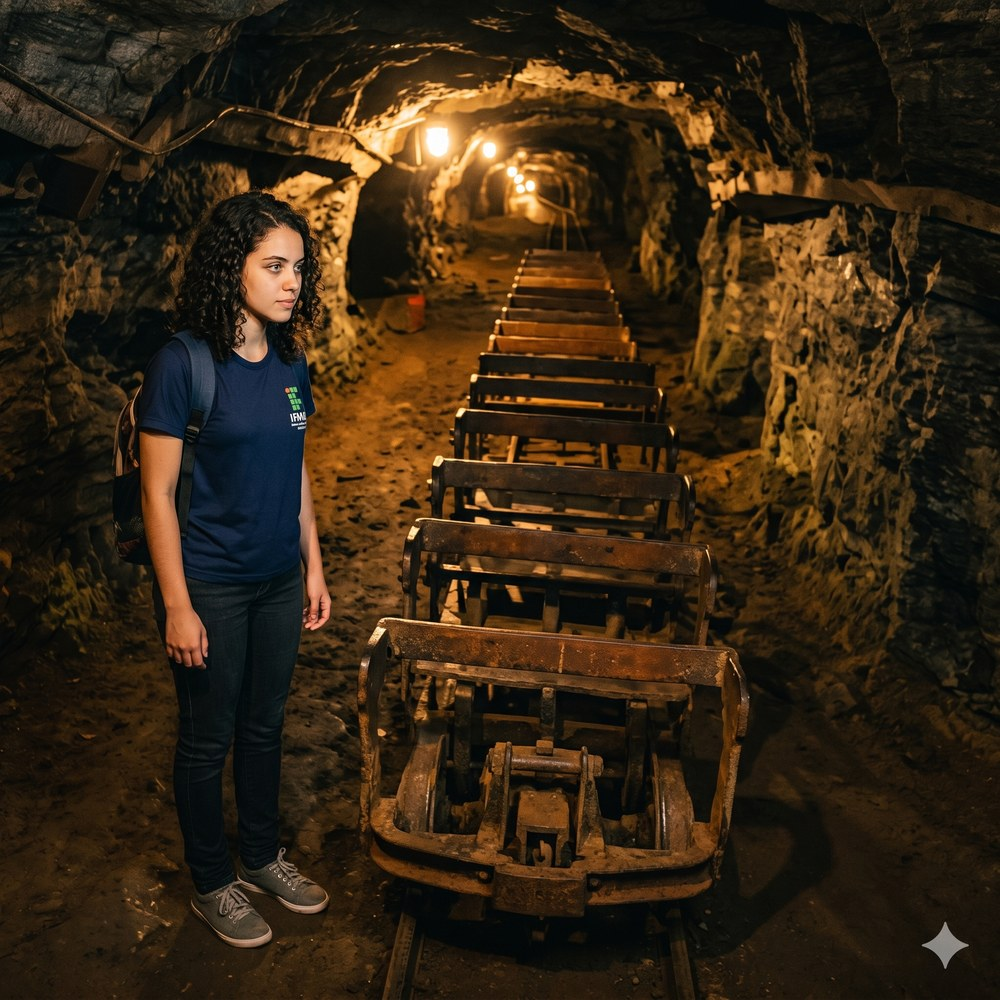
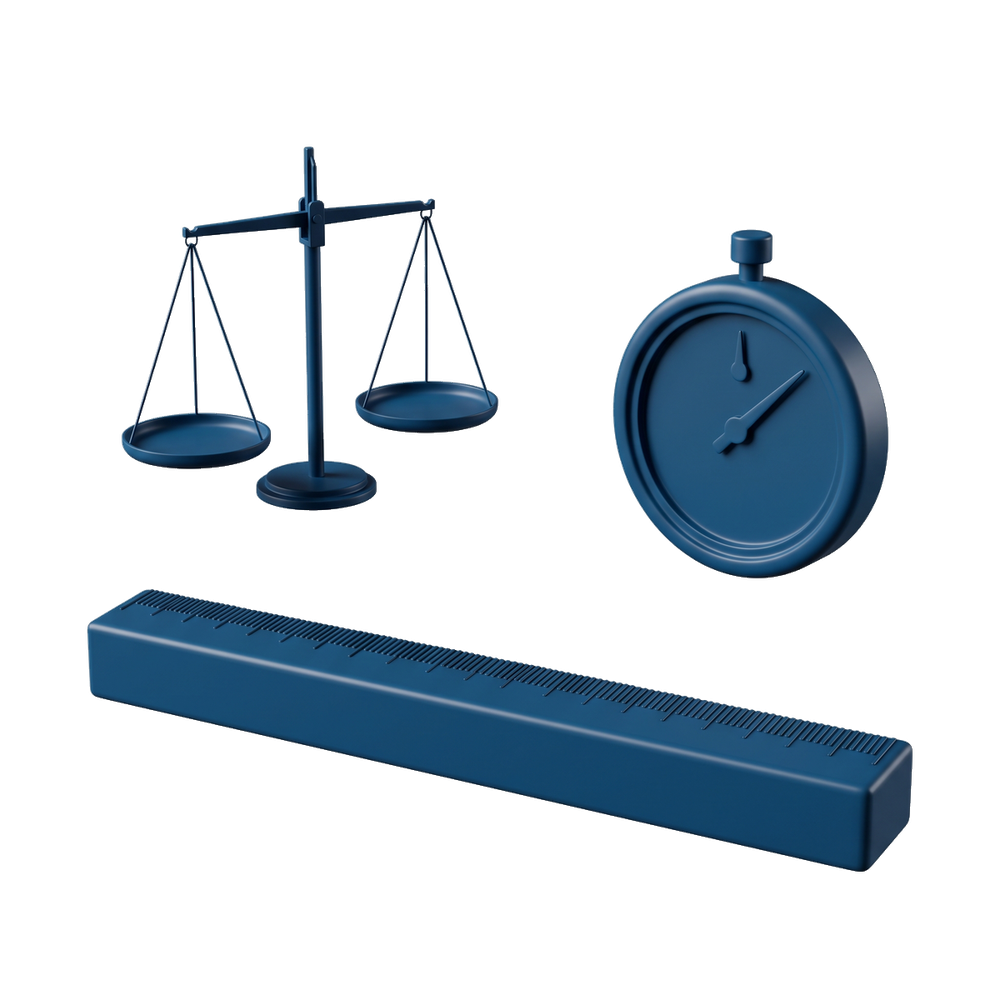
“O sistema métrico é para todos os povos, para todos os tempos.”
A tarde caía sobre a Rodovia dos Inconfidentes quando o trole começou a descer. Pedro apertou a barra de ferro com as duas mãos — não de medo, mas de atenção. Os trilhos tinham exatamente 315 metros de extensão e desciam até 120 metros abaixo da superfície. Ele sabia disso porque tinha lido a placa na entrada da Mina da Passagem, ali no distrito de Passagem de Mariana, a meio caminho entre Ouro Preto e Mariana pela BR-356. O cabo de aço que puxava o trole — movido por uma máquina pneumática com quase duzentos anos de idade — vibrava sob os pés como uma corda de violão. O que Pedro não sabia ainda era o que aquele número — 120 metros — realmente significava no contexto de uma emergência.
Sofia olhava para os lados enquanto o ar esfriava de repente. A parede da galeria passava a centímetros do seu rosto, toda em quartzo branco cruzado por filões cor de mel. Ela tentou calcular a velocidade do trole pela sensação do vento, mas desistiu — sem instrumentos, era adivinhação, não ciência. Lucas, sentado à sua esquerda, estava em silêncio. Olhava para a pedra como se fosse lê-la: aquele quartzo tinha sido formado há centenas de milhões de anos, e agora três estudantes do técnico em mineração do IFMG-OP desciam por dentro dele como quem atravessa um livro de pedra.
No fundo da galeria, onde os trilhos terminavam, o lago subterrâneo se abria em azul profundo — temperatura da água estável em torno de 21°C o ano inteiro, iluminado por refletores que revelavam a transparência de uma água que nunca havia visto o sol. Prof. Julio esperava na plataforma de chegada, ao lado de uma bancada de metal improvisada. Em cima da bancada: dois instrumentos de medição. Um com escala marcada em feet. Outro, em metros. Eram idênticos na função — ambos mediam pressão de água em galerias submersas — mas completamente diferentes na linguagem.
“Imaginem que há uma emergência”, disse Prof. Julio, sem preâmbulo. A voz ecoou nas paredes de quartzo. “Uma bomba de drenagem parou de funcionar. Vocês têm trinta segundos para ler o nível crítico da água neste instrumento e informar ao supervisor na superfície. Qual dos dois vocês pegam?”
Pedro olhou para os dois aparelhos. Um tinha escala em feet per square inch, o outro em Pascal e bar. Ele sabia o que era Pascal — tinha estudado na T03. Mas a escala em psi era uma sequência de números sem significado imediato para ele.
“O de metros”, disse Pedro, com a certeza de quem pega o martelo certo na oficina. “Porque é o que eu entendo.”
“E se o único disponível fosse o outro?”, perguntou Prof. Julio.
Silêncio. O lago refletia a luz dos refletores em ondas suaves. Lá no fundo, além do alcance visual, estavam os 240 metros restantes de profundidade — quilômetros de galerias inundadas que só a escuridão conhecia.
“Então eu precisaria saber converter”, disse Sofia, devagar. “E para converter, eu precisaria entender de onde vieram essas unidades. Por que existem duas formas de medir a mesma coisa.”
Lucas olhou para o lago. “E quem pagou o custo de não ter esse padrão unificado”, acrescentou ele, com a tranquilidade de quem já sabe que a história está sempre embutida nos números.
Era exatamente isso. A falta de uma linguagem comum de medidas não é uma abstração acadêmica: é uma falha que, ao longo da história, custou vidas, dinheiro e tempo. E a resposta da humanidade para esse problema foi o Sistema Internacional de Unidades — o SI. Aquele dia na Mina da Passagem começava com uma pergunta simples sobre dois instrumentos. Mas a resposta precisava de cinco tópicos.
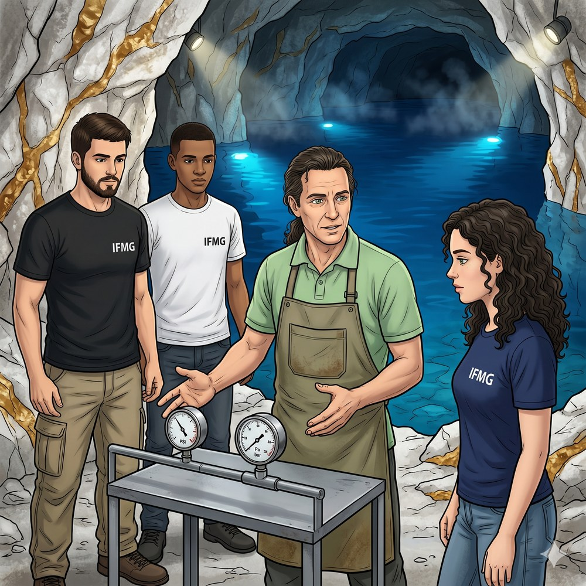
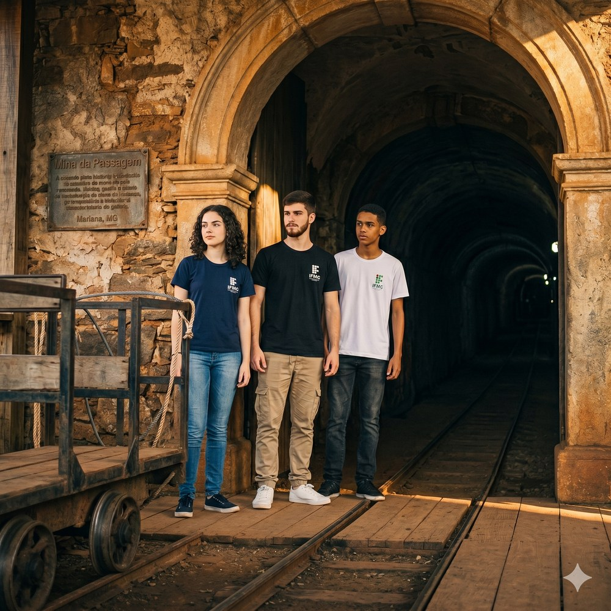
A Mina da Passagem existe exatamente como descrita acima — é a maior mina de ouro aberta à visitação do mundo, com trole puxado por cabo de aço, 315 metros de percurso e um lago subterrâneo real a 120 metros de profundidade. Fica no distrito de Passagem de Mariana, na Rua Eugênio Eduardo Rapallo, 192 — a cerca de 4 km de Mariana e pouco mais de 7 km de Ouro Preto pela BR-356 (Rodovia dos Inconfidentes).
Como acessar e usar o Street View: 1. Acesse o link abaixo — ou abra o Google Maps e pesquise por “Mina da Passagem, Passagem de Mariana, MG”. 2. Clique no ícone do boneco amarelo (Pegman) no canto inferior direito do mapa e arraste-o até a rua ou local desejado. 3. Solte o boneco sobre a rua destacada em azul — você entrará no modo Street View. 4. Use as setas na tela para caminhar e o mouse (ou o dedo, no celular) para girar a câmera 360°. 5. Procure o portal de entrada da mina em pedra e a plataforma de embarque do trole — os mesmos elementos descritos no Ato I.
Entre Ouro Preto e Mariana há cerca de 13 quilômetros pela Rodovia dos Inconfidentes (BR-356). A Mina da Passagem fica a meio caminho, no distrito que leva o seu nome.
Antes de decidir qual instrumento confiar numa emergência, o trio precisava entender de onde vinham essas duas linguagens de medida — e por que elas ainda coexistem no chão de uma mina brasileira.
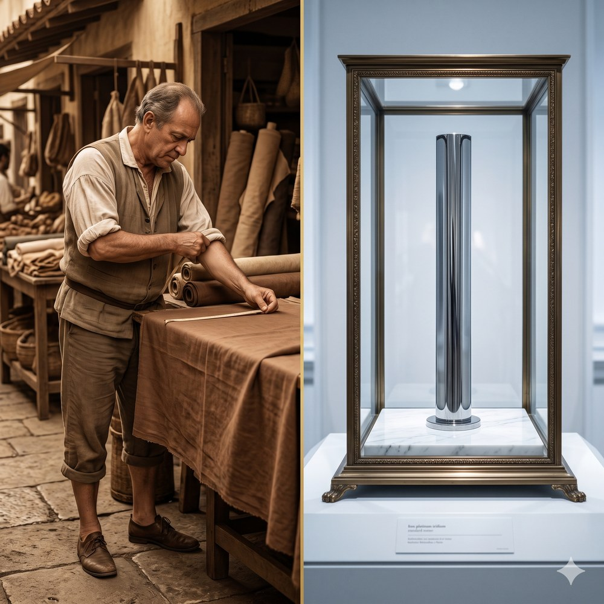
Antes de 1790, cada região da Europa usava suas próprias unidades de medida: o pé variava de 28 cm na França a 33 cm na Alemanha; a braça brasileira colonial equivalia a 2,2 metros, mas diferia da portuguesa. Em Minas Gerais, no século XVIII, o ouro era pesado em oitavas (3,59 g) e marcos (229,5 g) — unidades que confundiam negociantes e favoreciam fraudes nas Casas de Fundição. A Revolução Francesa de 1789 criou o impulso político para uma reforma radical: em 1791, o matemático Condorcet propôs um sistema baseado na natureza, e em 1799 o primeiro metro-padrão de platina foi depositado nos Arquivos Nacionais da França.
O sistema MKS (Metro-Quilograma-Segundo), formalizado no início do século XX, foi o precursor direto do SI. Enquanto o MKS cobria a mecânica clássica, faltavam unidades coerentes para eletricidade, temperatura e quantidade de substância. Em 1960, a 11.a Conferência Geral de Pesos e Medidas (CGPM) adotou o Système International d’Unités — o SI — como extensão do MKS com 7 grandezas fundamentais, tornando-se o único sistema com cobertura universal das áreas da Física.
Na mineração brasileira moderna, a NR-22 (Norma Regulamentadora de Segurança e Saúde Ocupacional na Mineração) exige que todos os instrumentos de medição utilizados em operações subterrâneas sejam calibrados e identificados com suas unidades SI. Quando Pedro se deparou com o instrumento em psi na galeria, ele estava diante de um problema real: equipamentos importados dos Estados Unidos, que não adotaram o SI integralmente, chegam às minas brasileiras com escalas em unidades imperiais — e a conversão errada pode custar uma bomba queimada, ou pior.
Do pé ao metro: uma história de convenções
Pedro, de volta na bancada com os dois instrumentos, perguntou ao Prof. Julio: “Mas por que ainda existem unidades fora do SI? Se o sistema métrico foi criado em 1799, não deveriam ter sumido há duzentos anos?”
A resposta veio na forma de uma lista mental: os Estados Unidos ainda usam polegadas, pés e milhas no cotidiano. A aviação internacional mede altitude em pés (feet). A pressão de pneus é dada em psi no Brasil todo. O screen de televisão é vendido em polegadas. “É que sistemas de medida são também sistemas culturais”, disse Prof. Julio. “Mudar unidades é como mudar língua — as pessoas resistem.”
O sistema MKS nasceu da necessidade de coerência na mecânica: se você mede força em Newton (N), massa em quilograma (kg) e aceleração em metros por segundo ao quadrado (m/s2), a equação F = m·a funciona sem fator de conversão. Essa propriedade — chamada coerência — é o que torna o SI especialmente poderoso.
| Símbolo | Grandeza | Unidade |
|---|---|---|
| F | Força | N (Newton = kg·m·s−2) |
| m | Massa | kg (quilograma) |
| a | Aceleração | m/s2 (metro por segundo ao quadrado) |
O percurso histórico vai do caos medieval das unidades regionais ao MKS industrial do século XX, e deste ao SI de 1960 — que foi revisado pela última vez em 2019 para redefinir as 7 grandezas fundamentais com base em constantes físicas universais, eliminando os últimos artefatos físicos como referência de medida.
Do pé ao metro, do MKS ao SI: escolher um padrão nunca foi só ciência — foi sempre, também, uma decisão de convivência entre povos.
Sete grandezas sustentam toda a Física — e cada uma delas aparece, de um jeito ou de outro, na rotina de quem trabalha debaixo da terra.
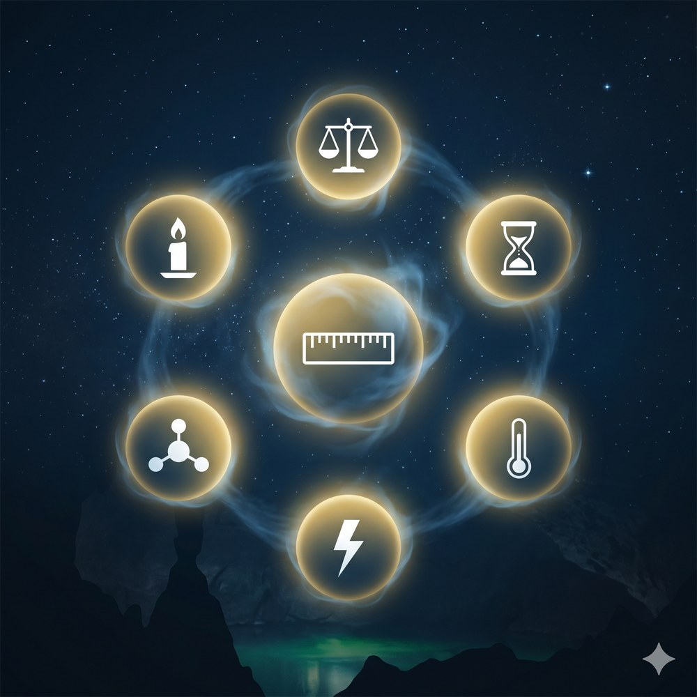
A Escola de Minas de Ouro Preto, fundada em 1876 por Claude Henri Gorceix, foi a primeira instituição de ensino superior técnico-científico do Brasil. Seu laboratório de metrologia — um dos primeiros do país — usava instrumentos importados da França e da Alemanha, todos calibrados no sistema MKS. Quando a CGPM adotou o SI em 1960, o Brasil alinhou-se imediatamente: o Inmetro (Instituto Nacional de Metrologia, Qualidade e Tecnologia), criado em 1973, tornou-se o guardião nacional do SI, mantendo os padrões primários que rastreiam cada medição feita no país às definições internacionais.
O SI é construído sobre 7 grandezas fundamentais — chamadas assim porque são independentes entre si e suficientes para derivar todas as demais grandezas físicas (grandezas derivadas). Cada grandeza tem uma unidade de base, um símbolo oficial e, desde 2019, uma definição baseada em constantes físicas universais: a velocidade da luz (c), a constante de Planck (h), a carga elementar (e), a constante de Boltzmann (k), o número de Avogadro (NA), a eficácia luminosa (Kcd) e a frequência de transição hiperfina do césio-133 (ΔνCs).
Na rotina de uma mina subterrânea, o técnico em mineração lida cotidianamente com ao menos 5 das 7 grandezas fundamentais: comprimento (metro) ao medir galerias e taludes; massa (quilograma) ao pesar minério e explosivos; tempo (segundo) ao controlar ciclos de detonação e ventilação; temperatura (kelvin/Celsius) ao monitorar o ambiente subterrâneo conforme a NR-22; e corrente elétrica (ampere) ao operar iluminação e bombas. Mol e candela aparecem, respectivamente, em análises químicas de minério e em laudos de iluminância dos ambientes de trabalho.
As 7 grandezas, suas unidades e definições (SI-2019)
Sofia abriu o caderno e pediu ao Prof. Julio para confirmar: eram realmente apenas sete grandezas que sustentavam todo o edifício da Física? “Apenas sete”, ele confirmou. “Como as sete notas musicais — combinadas, geram toda a complexidade que existe.”
| Grandeza | Unidade | Símb. | Definição resumida (SI-2019) |
|---|---|---|---|
| Comprimento | metro | m | Caminho da luz no vácuo em 1/299 792 458 s |
| Massa | quilograma | kg | Constante de Planck: h = 6,626 × 10−34 J·s |
| Tempo | segundo | s | 9 192 631 770 períodos do césio-133 |
| Corrente elétrica | ampere | A | Fluxo de 1/(1,602 × 10−19) elétrons/s |
| Temperatura | kelvin | K | Constante de Boltzmann: k = 1,381 × 10−23 J/K |
| Qtd. substância | mol | mol | 6,022 × 1023 entidades (Avogadro) |
| Intens. luminosa | candela | cd | Eficácia luminosa de 540 THz = 683 lm/W |
“Repara numa coisa”, disse Lucas, olhando para o quadro. “Antes de 2019, o quilograma era definido por um objeto físico — um cilindro de platina-irídio guardado numa caixa em Paris. Uma definição que dependia de um artefato que envelhecia, que podia ser danificado, que não podia ser reproduzido em laboratório. Agora é definido por uma constante da natureza. Isso é metrologia filosófica: a medida saiu do mundo dos objetos e entrou no mundo das leis.”
Cada grandeza fundamental gera, por multiplicação e divisão, as grandezas derivadas: velocidade (m/s), aceleração (m/s2), força (kg·m·s−2 = N), pressão (kg·m−1·s−2 = Pa), energia (kg·m2·s−2 = J) e dezenas de outras. A estrutura é hierárquica e coerente: como andares de um edifício, cada grandeza derivada repousa sobre as fundações das sete fundamentais.
Sete grandezas bastam para descrever o universo mensurável — e desde 2019, nenhuma delas depende mais de um objeto guardado numa caixa.
Da distância entre Ouro Preto e o núcleo da Terra até o diâmetro de um grão de poeira respirável, o SI usa uma mesma ferramenta para não perder o fio da meada: os prefixos.
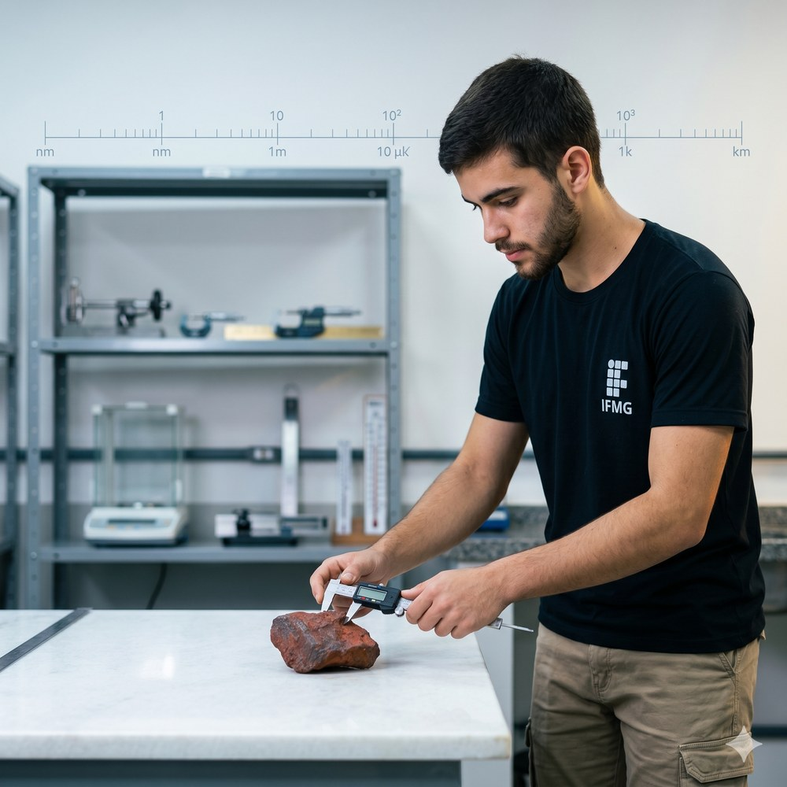
Os prefixos do SI foram introduzidos para resolver um problema prático que já assombrava os naturalistas do século XVIII: como escrever de forma compacta grandezas que variavam de bilhões de quilômetros (distâncias astronômicas) a frações de nanômetros (estruturas cristalinas)? A solução foi padronizada progressivamente pela CGPM: os primeiros prefixos (kilo-, hecto-, deca-, deci-, centi-, mili-) foram adotados com o metro em 1799. Os prefixos de menor escala (nano-, pico-, femto-) vieram no século XX, com a física atômica e nuclear. Em 2022, a CGPM adotou os prefixos mais extremos: ronna- (1027) e quetta- (1030) para o lado grande, e ronto- (10−27) e quecto- (10−30) para o lado pequeno.
Os prefixos SI são potências de 10 que se aplicam a qualquer unidade de base ou derivada. Eles formam um sistema decimal coerente: cada degrau equivale a multiplicar ou dividir por 10 (nos prefixos de deci-, centi-, mili-) ou por 1 000 (nos prefixos maiores, de kilo- em diante). O uso correto dos prefixos elimina a necessidade de notação científica em expressões cotidianas: em vez de 0,000 001 m, escreve-se 1 µm (um micrômetro).
Na mineração, os técnicos trabalham simultaneamente em múltiplas escalas: a granulometria do minério após britagem é medida em milímetros (mm) e micrômetros (µm); a capacidade das correias transportadoras, em toneladas por hora (t/h) — onde “tonelada” é um múltiplo não-SI do quilograma (1 t = 103 kg = 1 Mg); a extensão das galerias, em metros (m) e quilômetros (km); a concentração de poeira respirável no ar, em miligramas por metro cúbico (mg/m3), conforme os limites da NR-15. Dominar os prefixos é dominar a linguagem de escala da mineração.
Tabela completa de prefixos e submúltiplos do SI
Pedro examinou o paquímetro que o Prof. Julio havia colocado sobre a bancada. A escala principal estava em milímetros; o nônio, em décimos de milímetro (0,1 mm = 100 µm). Dois prefixos diferentes no mesmo instrumento.
| Prefixo | Símb. | Fator | Exemplo de uso |
|---|---|---|---|
| quetta- | Q | 1030 | Massa da Terra: ∼6 × 1024 kg |
| ronna- | R | 1027 | — |
| yotta- | Y | 1024 | Massa do Sol: ∼2 × 1030 kg |
| zetta- | Z | 1021 | Distâncias intergalácticas (zm) |
| exa- | E | 1018 | Energia anual do sol (EJ) |
| peta- | P | 1015 | Capacidade de datacenters (PB) |
| tera- | T | 1012 | Frequência de laser (THz) |
| giga- | G | 109 | Processadores (GHz) |
| mega- | M | 106 | Rádio (MHz) |
| kilo- | k | 103 | Distâncias (km); forças (kN) |
| hecto- | h | 102 | Pressão atmosférica (hPa) |
| deca- | da | 101 | Decâmetros (dam) — uso raro |
| (sem) | — | 100 | Metro (m), quilograma (kg), segundo (s) |
| deci- | d | 10−1 | Decilitros (dL) |
| centi- | c | 10−2 | Centímetros (cm) |
| mili- | m | 10−3 | Milímetros (mm) |
| micro- | µ | 10−6 | Micrômetros (µm) em granulometria |
| nano- | n | 10−9 | Nanômetros (nm) em cristalografia |
| pico- | p | 10−12 | Picofarads (pF) |
| femto- | f | 10−15 | Tamanho do núcleo atômico (∼1 fm) |
| atto- | a | 10−18 | Carga de partículas subatômicas |
| zepto- | z | 10−21 | Raios gama duros |
| yocto- | y | 10−24 | Escala de quarks |
| ronto- | r | 10−27 | — (adotado em 2022) |
| quecto- | q | 10−30 | — (adotado em 2022) |
Regras de uso obrigatórias
A conversão entre prefixos é sempre uma multiplicação ou divisão por potência de 10:
| Símbolo | Grandeza | Unidade |
|---|---|---|
| x | Valor numérico | qualquer grandeza |
| 10n | Fator do prefixo | adimensional |
Do quetta ao quecto, os prefixos são a régua que a linguagem usa para não se perder entre o infinitamente grande e o infinitamente pequeno.
O SI não erradicou as unidades antigas — aprendeu a conviver com elas, e o técnico de mineração precisa saber quando essa convivência é segura e quando é perigosa.
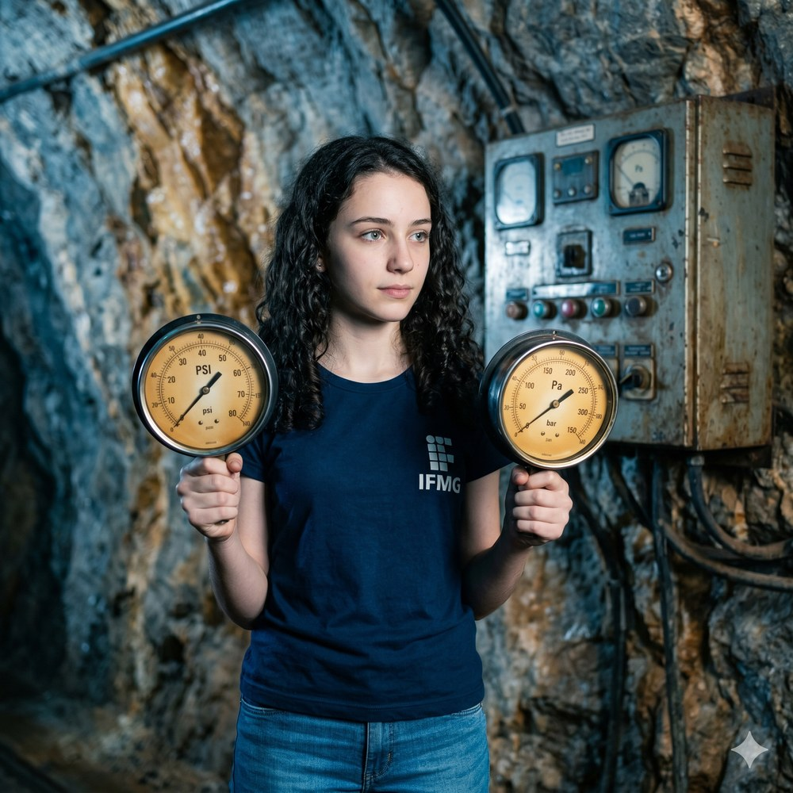
O Brasil adotou o sistema métrico decimal por lei em 1862 (Decreto n.o 1.157), tornando-se um dos primeiros países do mundo a fazê-lo. Porém, unidades antigas persistiram na prática rural e comercial até meados do século XX: o alqueire (de terra e de grãos), a légua (de estrada) e a braça (de construção) conviveram com o metro por décadas. Na mineração colonial de Minas Gerais, o marco e a oitava sobreviveram nas Casas de Fundição até o século XIX. Hoje, as unidades não-SI mais presentes no cotidiano brasileiro são importadas do sistema imperial anglo-saxônico — especialmente em equipamentos, pneus e produtos eletrônicos de origem norte-americana.
O SI não proíbe o uso de certas unidades fora do sistema — ele as tolera com restrições. A CGPM classifica as unidades fora do SI em três grupos: (1) aceitas para uso com o SI — como minuto (min), hora (h), dia (d), litro (L), tonelada (t), grau Celsius (°C), eletronvolt (eV); (2) toleradas em contextos específicos — como a milha náutica e o nó (navegação), o hectare (ha) em agrimensura, e o bar em meteorologia; (3) não recomendadas — como a caloria (cal), o psi (lbf/in2) e o Ångström (Å).
A conversão de unidades não-SI para SI é tarefa cotidiana do técnico em mineração: pressão de bombas hidráulicas em bar → Pascal; temperatura de fornos em °F → °C ou K; ângulo de taludes em graus sexagesimais → radianos; capacidade de silos em barris → metros cúbicos. Erros de conversão em contextos industriais têm histórico documentado de acidentes: o acidente com o Mars Climate Orbiter (1999) — onde a confusão entre libra-força e Newton destruiu uma sonda de US$ 327 milhões — é o exemplo mais citado em treinamentos de segurança metrológica.
As principais unidades fora do SI e suas conversões
Sofia pegou o instrumento em psi e perguntou: “Quanto é 1 psi em Pascal?”
| Símbolo | Grandeza | Unidade |
|---|---|---|
| psi | libra-força por polegada quadrada | lbf/in2 |
| Pa | Pascal | N/m2 = kg·m−1·s−2 |
| Símbolo | Grandeza | Unidade |
|---|---|---|
| T(°F) | Temperatura em Fahrenheit | °F |
| T(°C) | Temperatura em Celsius | °C |
| T(K) | Temperatura em Kelvin | K |
| Unidade | Símb. | Área | Equivalência SI | Status CGPM |
|---|---|---|---|---|
| Minuto | min | Tempo | 60 s | Aceita |
| Hora | h | Tempo | 3 600 s | Aceita |
| Litro | L | Volume | 10−3 m3 = 1 dm3 | Aceita |
| Tonelada | t | Massa | 103 kg = 1 Mg | Aceita |
| Grau Celsius | °C | Temp. | T(°C) = T(K) − 273,15 | Aceita |
| Hectare | ha | Área | 104 m2 | Tolerada |
| Bar | bar | Pressão | 105 Pa | Tolerada |
| Milha náutica | M | Comprim. | 1 852 m | Tolerada |
| Grau (ângulo) | ° | Ângulo | π/180 rad | Tolerada |
| Eletronvolt | eV | Energia | 1,602 × 10−19 J | Aceita |
| Quilate | ct | Massa | 2 × 10−4 kg | Tolerada |
| Polegada | in | Comprim. | 2,54 × 10−2 m | Não recom. |
| psi | psi | Pressão | 6 894,76 Pa | Não recom. |
| Caloria | cal | Energia | 4,186 J | Não recom. |
“O problema do psi não é que ele não funcione”, disse Pedro. “O problema é que, numa emergência, ninguém faz mentalmente a divisão por 6.894. O sistema métrico foi criado para que a matemática seja simples. Múltiplos de 10, sempre.”
Lucas completou: “E para que qualquer técnico, em qualquer país, possa ler o mesmo instrumento e comunicar o mesmo valor ao supervisor. Essa é a parte que a história cobrou caro.”
O SI tolera o que não inventou — mas cobra o preço da tolerância em forma de conversões que, numa emergência, ninguém tem tempo de fazer de cabeça.
Depois de entender as sete grandezas e os prefixos, resta uma pergunta prática: como escrever e pronunciar tudo isso sem erro — porque, numa mina, um símbolo errado pode custar caro.
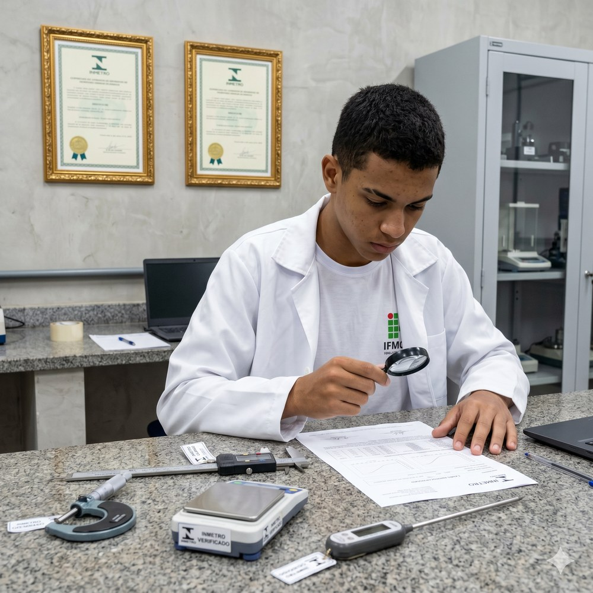
O Brasil criou o Sistema Nacional de Metrologia, Normalização e Qualidade Industrial (Sinmetro) pela Lei n.o 5.966/1973, com o Inmetro como organismo executivo. Desde então, o Inmetro mantém os padrões primários nacionais rastreáveis ao BIPM (Bureau International des Poids et Mesures, em Sèvres, França) — a mesma instituição que guarda o metro-padrão de platina-irídio, hoje mantido apenas por razões históricas. A Portaria Inmetro n.o 29/1995 regulamenta no Brasil o uso das unidades SI, determinando as regras de grafia e pronúncia que devem ser seguidas em documentos técnicos, embalagens e instrumentos calibrados.
O SI é estruturado em três camadas: (1) as 7 unidades de base; (2) as 22 unidades derivadas com nome especial (como Newton, Pascal, Joule, Watt, Coulomb, Volt, Farad); e (3) um número ilimitado de unidades derivadas sem nome especial (como m/s, kg/m3, m2). As regras de grafia garantem que a notação seja inequívoca: um erro ortográfico pode criar ambiguidade real — o símbolo m (metro) e o símbolo M (mega-) têm significados completamente distintos.
O laudo técnico de um blasting (detonação controlada) em uma mina deve registrar, conforme a NR-22, as pressões de detonação em quilopascal (kPa), a massa do explosivo em quilograma (kg), o tempo de detonação em milissegundos (ms) e a distância de segurança em metros (m). Qualquer grafia incorreta — como “Kg” em vez de “kg”, ou “KPa” em vez de “kPa” — invalida o documento perante o Ministério do Trabalho. Não é pedantismo: é rastreabilidade legal.
As regras de grafia e pronúncia do SI (Inmetro)
Lucas abriu o caderno e escreveu a lista. O Prof. Julio ditou devagar, porque cada regra tinha uma razão histórica.
Regras de grafia dos símbolos de unidades (SI / Inmetro)
Regras de pronúncia
| Símb. | Por extenso | Pronúncia correta | Pronúncia incorreta (evitar) |
|---|---|---|---|
| Pa | pascal | pás-cal | pá-scal |
| kPa | quilopascal | qui-lo-pás-cal | kilo-pás-cal |
| N | newton | néw-ton | né-u-ton |
| J | joule | djúl | jó-ul |
| W | watt | wát | vát (confusão com volt) |
| Hz | hertz | hérts | hértz |
| mol | mol | mól | mó-ul |
| cd | candela | can-dé-la | cân-de-la |
| µm | micrômetro | mi-crô-me-tro | mi-cron (µm ≠ mícron) |
| Å | ångström | ângs-tröm | — (unidade fora do SI) |
Pedro leu a lista e franziu a testa. “Então quando eu falo ‘kilo-pás-cal’ separando o prefixo, estou certo tecnicamente, mas informalmente?”
“Você está certo”, disse Prof. Julio. “O prefixo e a unidade formam uma palavra única. Mas o importante é que todos na equipe entendam o mesmo valor. A pronúncia é a gramática da comunicação técnica.”
O vagonete voltaria em quarenta minutos. Havia tempo para uma última questão.
| Símbolo | Grandeza | Unidade |
|---|---|---|
| P | Pressão | Pa (Pascal = N·m−2) |
| ρ | Massa específica do fluido | kg/m3 |
| g | Aceleração da gravidade | m/s2 (≈ 9,8 m/s2) |
| h | Profundidade | m |
“Se eu soubesse calcular assim, teria entendido o instrumento em psi desde o início”, disse Pedro.
“É para isso que serve o SI”, disse Prof. Julio. “Não para dificultar. Para tornar tudo conversível.”
Escrever certo uma unidade não é rigor gramatical vazio — é a diferença entre um laudo válido e um documento que uma auditoria pode derrubar.
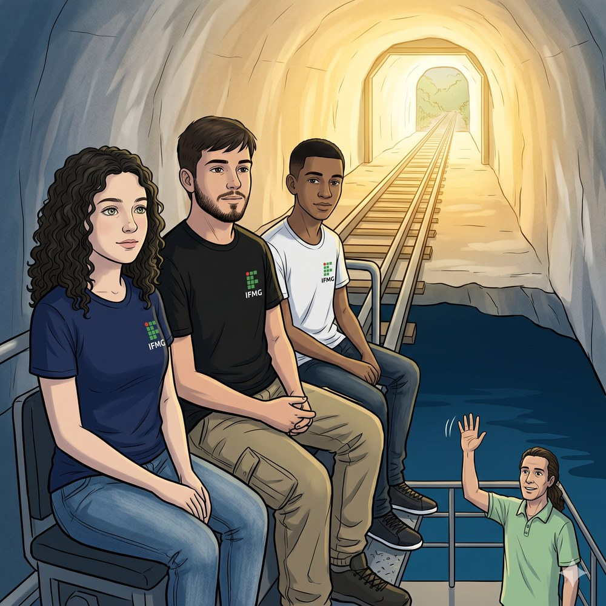
O vagonete subiu devagar. A luz lá no alto — a abertura da galeria — crescia aos poucos, e Pedro percebeu que estava contando os metros instintivamente. Não em pés, não em braças: em metros. Cento e vinte deles, separando o lago azul do céu de Minas.
Sofia anotou a última frase no caderno: “O SI não mede o mundo — ele nos permite falar sobre o mundo da mesma forma.” Lucas releu e acrescentou mentalmente o corolário: “E quando não temos essa linguagem comum, o custo humano pode ser enorme.”
Do MKS ao SI, das sete grandezas fundamentais à tabela de prefixos, das unidades não-SI às regras de grafia do Inmetro — eram cinco tópicos que formavam um único argumento: a medida é uma linguagem, e como toda linguagem precisa de gramática para funcionar. Sem gramática, há ambiguidade. Sem consenso, há erros. E em uma mina subterrânea, erros de medição não são abstrações.
Na próxima etapa desta trilha, o trio voltará ao laboratório do IFMG-OP para aplicar os conceitos em atividades de medição direta e indireta — transformando o que foi aprendido na galeria em prática calibrada com instrumentos reais.
Atividades que articulam a Física da Trilha T04 com outras disciplinas do currículo do Técnico em Mineração Integrado ao Ensino Médio. Cada atividade exige análise, síntese ou avaliação — Bloom L4 a L6.
Quando a Física se encontra com outra disciplina, o caminho até a resposta segue oito etapas — sempre as mesmas. Esse protocolo chama-se Componente 5 e é o método que técnicos de mineração usam para resolver problemas reais. Pratique-o aqui: você vai reaplicá-lo integralmente no Trabalho (TR) desta trilha.
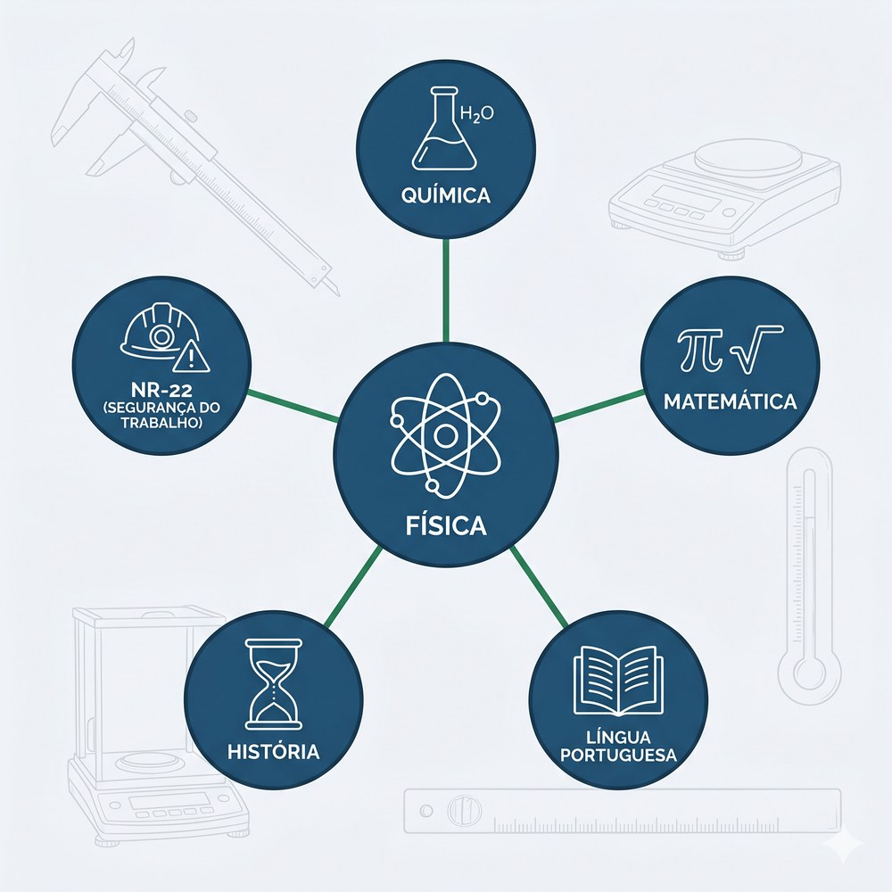
| Etapa | Nome | O que fazer |
|---|---|---|
| 1 | O que está sendo pedido? | Releia o enunciado. Escreva com suas palavras o que é pedido. |
| 2 | Quais são os dados? | Liste cada grandeza com seu símbolo, valor e unidade. |
| 3 | Quais são as hipóteses? | Declare o que vai assumir (atrito nulo, regime estacionário etc.). |
| 4 | Qual é o desenho do problema? | Faça um esboço, diagrama ou esquema simples da situação. |
| 5 | Quais são as equações? | Identifique a equação do TT. Isole a variável pedida. |
| 6 | Cálculo com unidades | Substitua os valores. Acompanhe as unidades até o resultado. |
| 7 | Análise de resultados | O resultado faz sentido? Compare com valores típicos. |
| 8 | Responda o que foi pedido | Formule a resposta completa ao que o problema perguntou. |
Em análise mineralógica, a concentração de ouro em uma amostra de minério é expressa em partes por milhão (ppm = mg/kg). Converta a concentração de 3,5 ppm para unidades SI (kg/kg) e para gramas por tonelada (g/t), justificando por que a tonelada, embora fora do SI, é unidade aceita neste contexto.
A Mina da Passagem tem galeria principal de 315 m de comprimento horizontal, descendo 120 m em profundidade. Calcule o comprimento real do trilho (inclinado) usando o teorema de Pitágoras e expresse em metros e quilômetros usando os prefixos SI corretos.
Analise um laudo técnico fictício e identifique cinco erros de grafia de unidades SI: “O equipamento mediu 5KG de pressão a 37ºC, com desvio de 0.003 Mts, operando a 60HZ.”
A Casa dos Contos de Ouro Preto foi o local de arrecadação do quinto (20%) do ouro extraído em Minas Gerais no século XVIII. O ouro era pesado em marcos (229,5 g) e oitavas (3,59 g). Compare esse sistema com o SI atual: quais são as vantagens metrológicas do SI para controle fiscal de extração mineral? Elabore um argumento com ao menos três critérios.
A NR-22 estabelece que a concentração de poeira respirável em ambientes subterrâneos não deve ultrapassar 2 mg/m3. Se um sensor lê 0,0020 g/m3, o valor está dentro do limite? Converta para as unidades da NR-22, justifique e indique qual prefixo SI está sendo usado implicitamente.
“A máquina do mundo se entreabre para quem sabe medir.”
Entre 1800 e 1805, já debilitado por doença degenerativa que deformava suas mãos e pés, Antônio Francisco Lisboa esculpiu em pedra-sabão doze figuras de tamanho quase natural para o adro do Santuário do Bom Jesus de Matosinhos, em Congonhas. Cada profeta ocupa uma posição calculada na escadaria de forma que, visto de baixo, o conjunto aparenta altura uniforme apesar da inclinação do terreno — um problema metrológico resolvido com a mesma lógica que o engenheiro de minas aplica ao nivelar galerias.
Aleijadinho não conhecia o SI, mas dominava intuitivamente o que o sistema formaliza: a escolha de uma unidade de referência (o palmo mineiro), sua subdivisão em frações proporcionais e a verificação sistemática de que cada peça se encaixa no todo. Os Doze Profetas são, nesse sentido, um exercício de metrologia em pedra: proporção é medida, medida é padrão, padrão é a essência do SI.
BONJORNO, J. R. Identidade Saraiva: Física. São Paulo: Saraiva, 2024.
MAXIMO, A. et al. Física: contexto & aplicações. São Paulo: Scipione, 2013.
TALAVEIRA, A. C. et al. Física: ensino médio, v. único. São Paulo: Nova Geração, 2005.
BLOOM, Benjamin S. (org.). O desenvolvimento de talentos na juventude. Porto Alegre: Globo, 1988.
HEWITT, Paul G. Física conceitual. 12. ed. Porto Alegre: Bookman, 2015.
NICOLELIS, Miguel. O verdadeiro criador de tudo: como o cérebro humano esculpiu o universo que conhecemos. São Paulo: Planeta, 2020.
PIAZZI, Pierluigi. Aprendendo inteligência: manual de instruções do cérebro para estudantes em geral. São Paulo: Aleph, 2008.
PIAZZI, Pierluigi. Inteligência em concursos: manual de instruções do cérebro para concurseiros e universitários. São Paulo: Aleph, 2013.